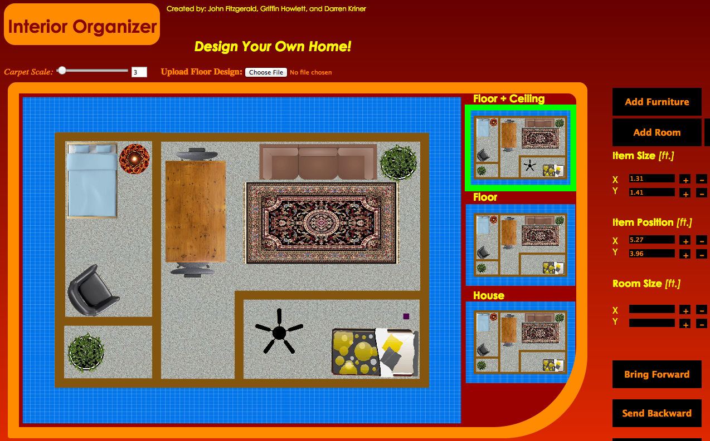
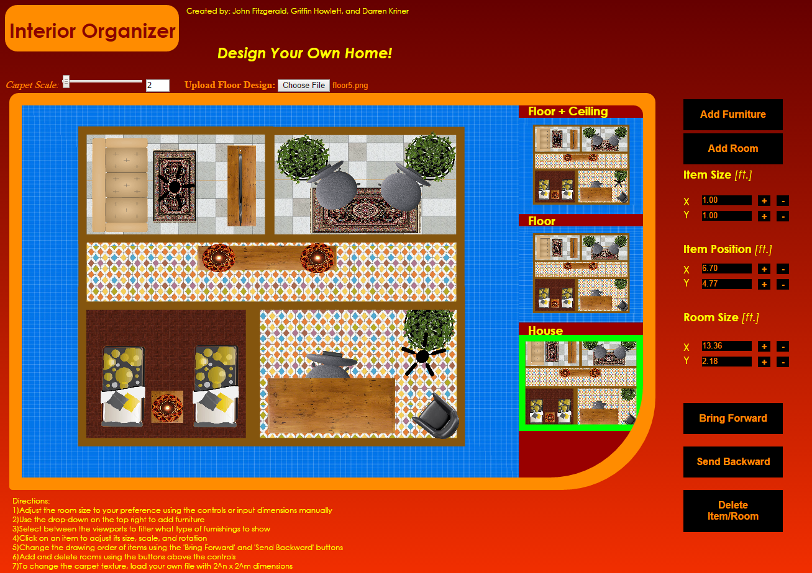

<table border="1" >
<tr>

<td align="center" style="text-align:left;">

  <br />


<b>Developers</b></br >
John Fitzgerald<br />
Griffin Howlett<br />
Darren Kriner <br/>
</td>

<td>
  <p><b><u>App Name: Interior Organizer</u></b></p>

   <p>Interior Organizer is a home decoration tool that allows you to virtually organize your room with furnishings. Use it to make sure that what you envision is 
   stylistic and feasible before you even start moving things physically in your home. The App supports input of real world measurements so you can fine tune item sizes
   and positions to fit your real space. If you want to recreate an entire floor of your house, you can add and delete rooms and arrange them to your preference</p>
   <p>
   <a href="AppSrc/index">Click to play </a><br/>
   <a href="assets/screenshots/proposal_outline.pdf">Project proposal</a><br />

   
   
   

</td>

</tr>

</table>


